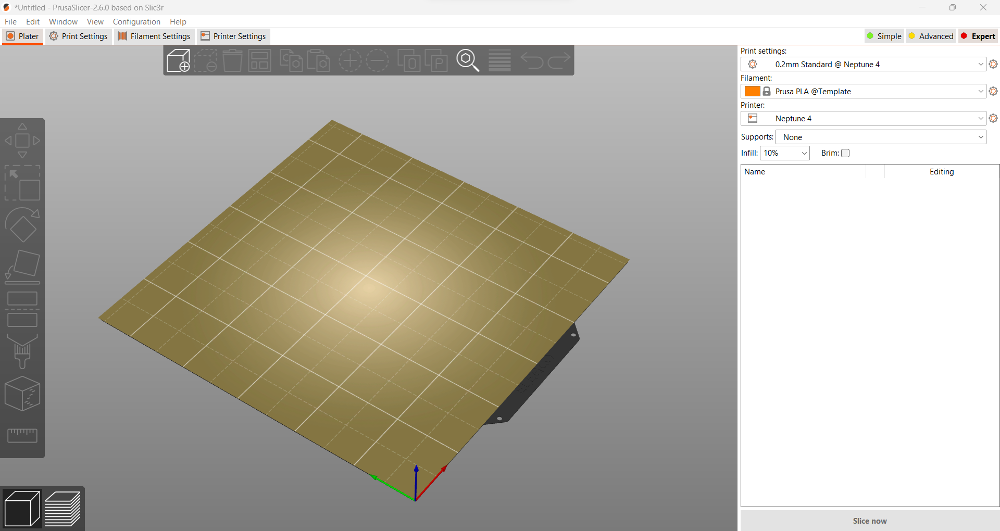
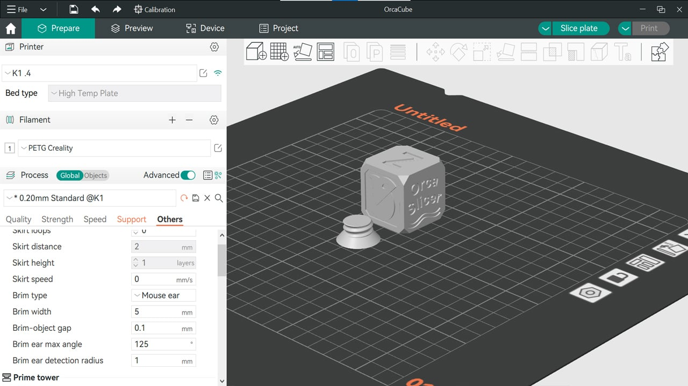
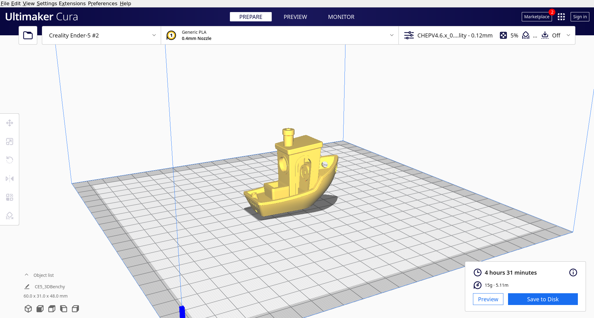
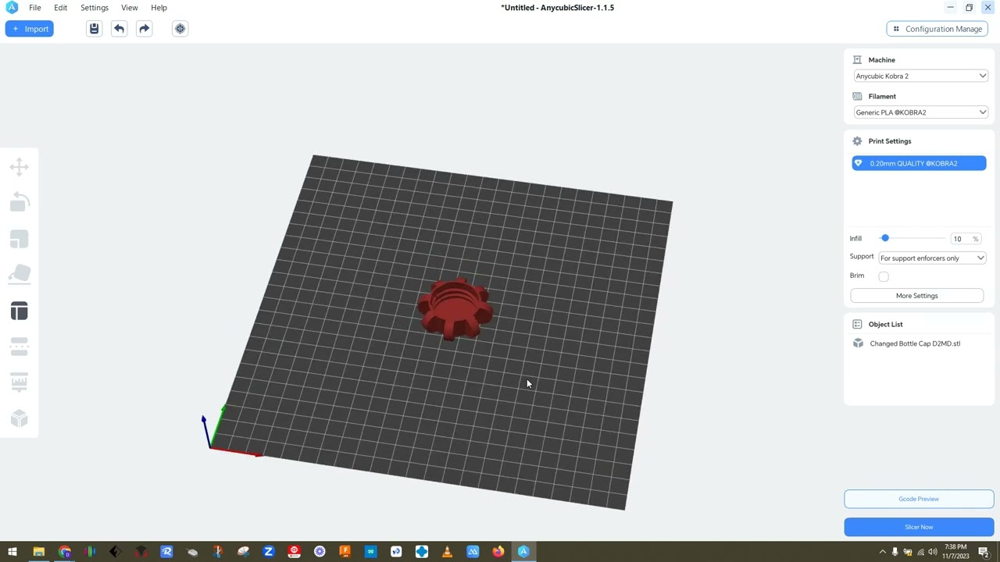
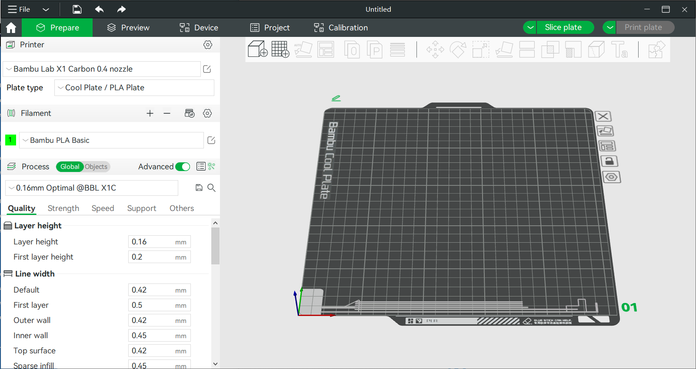

Slicing: Der Schlüssel zum erfolgreichen 3D-Druck
Beim 3D-Druck ist das Slicing ein unerlässlicher Schritt, der den Übergang von einem digitalen 3D-Modell zum druckbaren Objekt ermöglicht. Dieser Prozess zerlegt das Modell in dünne horizontale Schichten und generiert aus den Schichtinformationen G-Code, der die Anweisungen für den 3D-Drucker enthält. Ohne Slicing könnte der Drucker das Modell nicht korrekt umsetzen.
In der Regel erfolgt das Slicing mithilfe spezieller Software, die es ermöglicht, zahlreiche Druckparameter zu steuern. Zu den wichtigsten Einstellungen gehören die Schichthöhe, die das Detailniveau und die Druckzeit beeinflusst, sowie die Füllungsdichte (Infill), die angibt, wie viel Material im Inneren des Objekts verwendet wird. Auch die Druckgeschwindigkeit, die Temperatur des Extruders und des Druckbetts sowie die Unterstützung von Überhängen durch Support-Strukturen lassen sich im Slicer individuell anpassen.
Ein gut optimiertes Slicing sorgt nicht nur für eine hohe Druckqualität, sondern kann auch die Druckzeit verkürzen und Material sparen. Fortgeschrittene Funktionen in Slicing-Programmen wie Ultimaker Cura oder PrusaSlicer ermöglichen eine feine Abstimmung der Druckparameter, etwa für mehrfarbige Drucke oder komplexe Geometrien.
Das Slicing hat also großen Einfluss auf das Endergebnis. Fehler oder suboptimale Einstellungen können zu fehlerhaften Drucken führen, die entweder unbrauchbar oder strukturell schwach sind. Daher ist es wichtig, sich mit den Slicing-Software und deren Funktionen vertraut zu machen, um das Potenzial des 3D-Druckers voll auszuschöpfen.
Hier ein paar Slicer mit ihren Funktionen:
-
PrusaSlicer
PrusaSlicer ist ein Open-Source-Slicer von Prusa Research, der sowohl für Prusa-Drucker als auch für andere Modelle geeignet ist. Er bietet umfangreiche Funktionen wie Multi-Material-Druck und detaillierte Anpassungsmöglichkeiten. Die benutzerfreundliche Oberfläche macht ihn für Anfänger und Fortgeschrittene attraktiv. Regelmäßige Updates verbessern kontinuierlich die Leistung.
 -
OrcaSlicer
OrcaSlicer basiert auf PrusaSlicer und ist speziell für Bambu Labs-Drucker entwickelt. Es unterstützt Multi-Material-Druck und die Integration mit Bambu Labs' AMS (Automatic Material System). OrcaSlicer bietet benutzerfreundliche Funktionen und erweiterte Anpassungen für eine optimale Druckqualität. Besonders nützlich für Nutzer von Bambu-Druckern.
 -
Cura Slicer
Cura ist ein weit verbreiteter, benutzerfreundlicher Open-Source-Slicer, der viele 3D-Drucker unterstützt. Er bietet umfangreiche Anpassungsmöglichkeiten für Druckparameter und eine große Auswahl an voreingestellten Profilen. Cura ist besonders für Anfänger geeignet und bleibt durch regelmäßige Updates immer auf dem neuesten Stand. Kostenlos und einfach zu bedienen.
 -
Anycubic Slicer
Anycubic Slicer ist speziell für Anycubic-Drucker entwickelt und bietet eine benutzerfreundliche Oberfläche. Er basiert auf Cura und bietet vorgefertigte Profile für die gängigen Anycubic-Modelle. Der Slicer ermöglicht die Anpassung grundlegender Druckparameter wie Schichthöhe und Geschwindigkeit. Ideal für Einsteiger, die unkomplizierte Ergebnisse erzielen möchten.
 -
Bambu Studio
Bambu Studio wurde für Bambu Labs-Drucker entwickelt, insbesondere für den Multi-Material-Druck mit dem AMS-System. Es bietet fortschrittliche Funktionen zur Materialverwaltung und -überwachung. Die Software hat eine einfache Benutzeroberfläche und ermöglicht die Integration von Cloud-Diensten. Besonders gut geeignet für komplexe Druckvorgänge mit mehreren Materialien.
